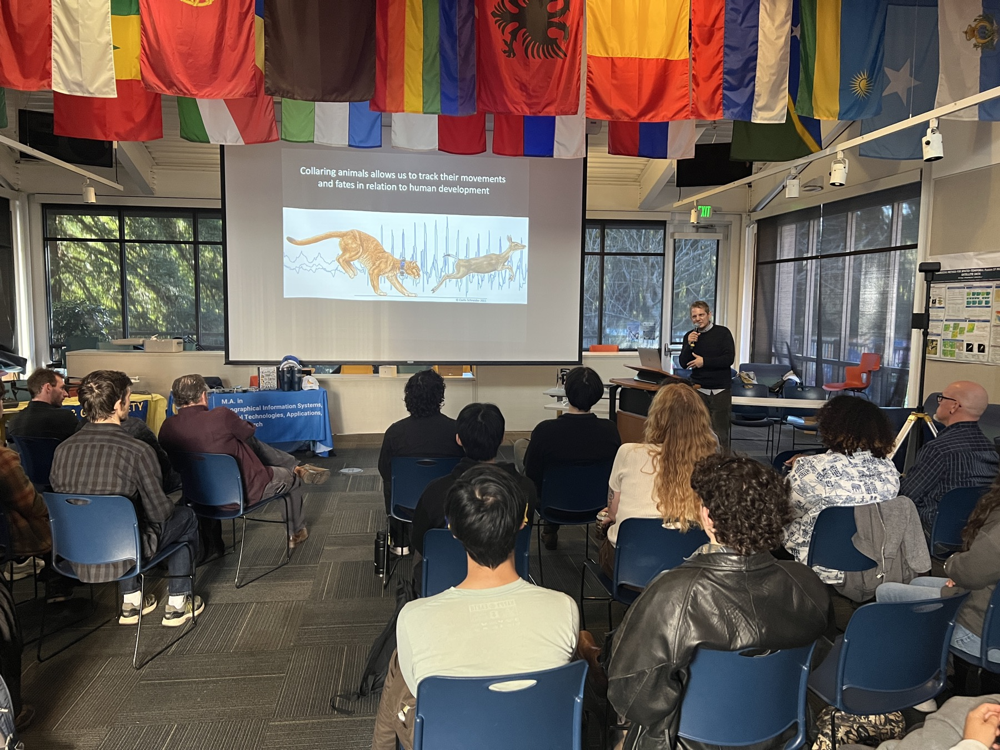
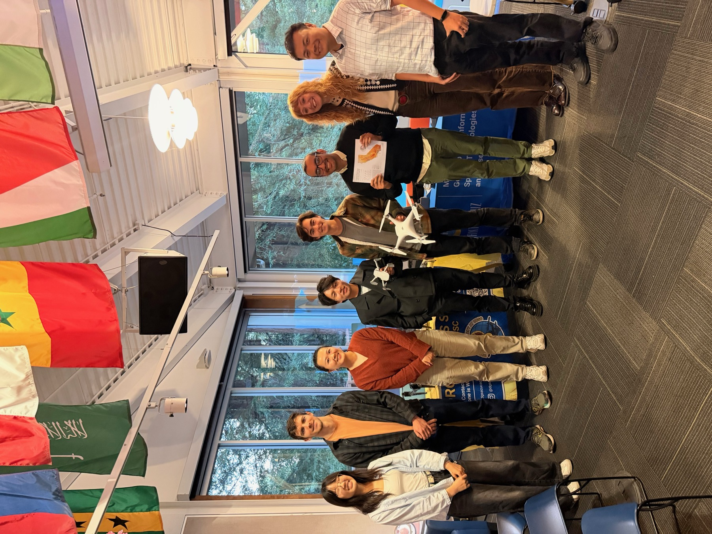

UCSC GIS Day 2025: Jointly hosted by GISTAR, CISR, GeoFly Lab, and the GIS & Drone Society
GISTAR, CISR, GeoFly Lab, and the GIS & Drone Society jointly hosted UCSC GIS Day 2025 at the Namaste Lounge, UC Santa Cruz. The event brought together a full room of students to learn, connect, and celebrate geospatial science.

Highlights included a keynote speaker panel featuring guests from the Santa Cruz Puma Project, NASA, the Elkhorn Slough Foundation, and more. We also hosted student map competitions, GeoTrivia, and a social mixer with drone tabling.
A big thank-you to everyone who attended and helped make the day a success. We look forward to celebrating UCSC GIS Day with you again!

